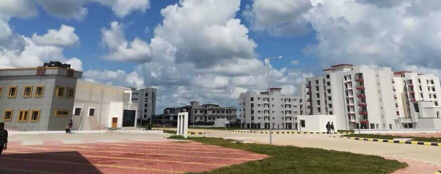
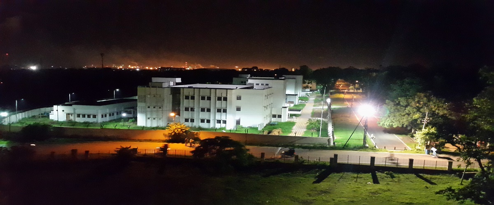
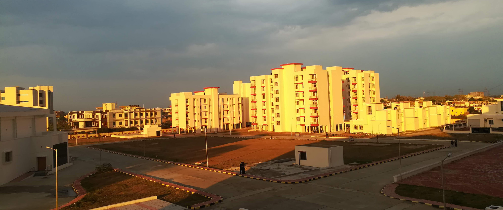
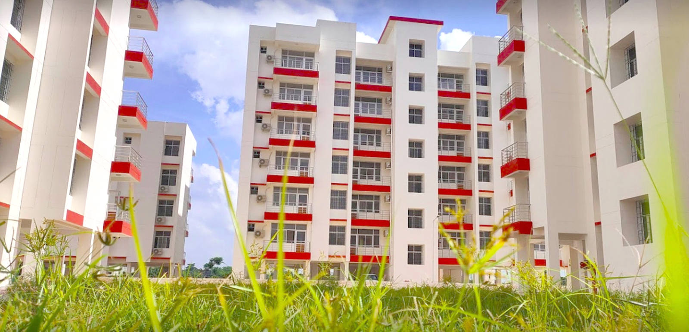
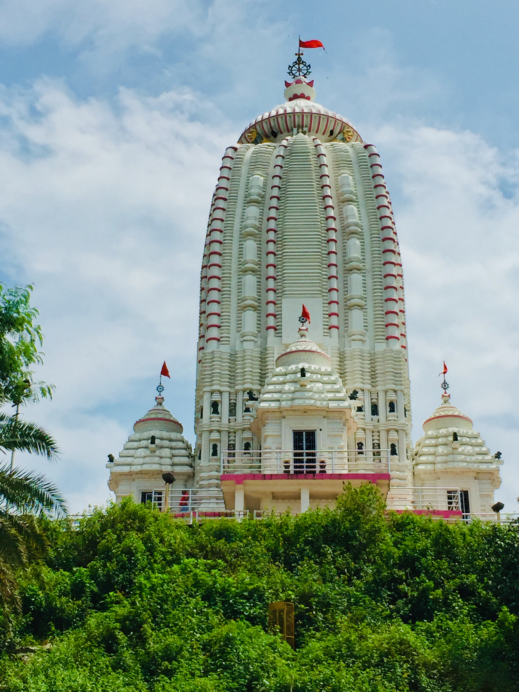
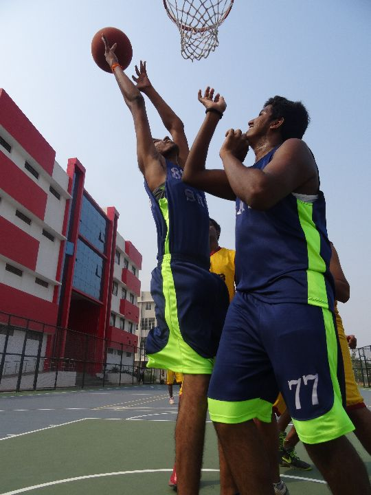
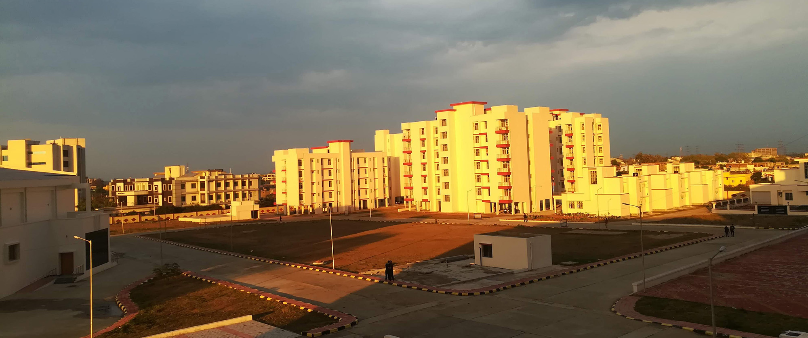
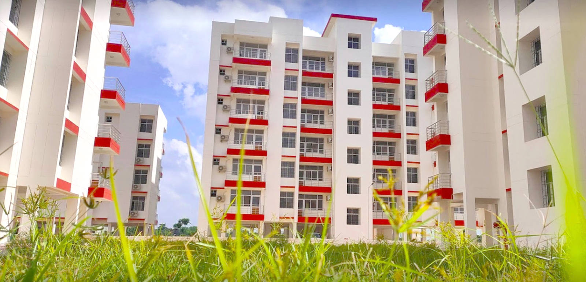
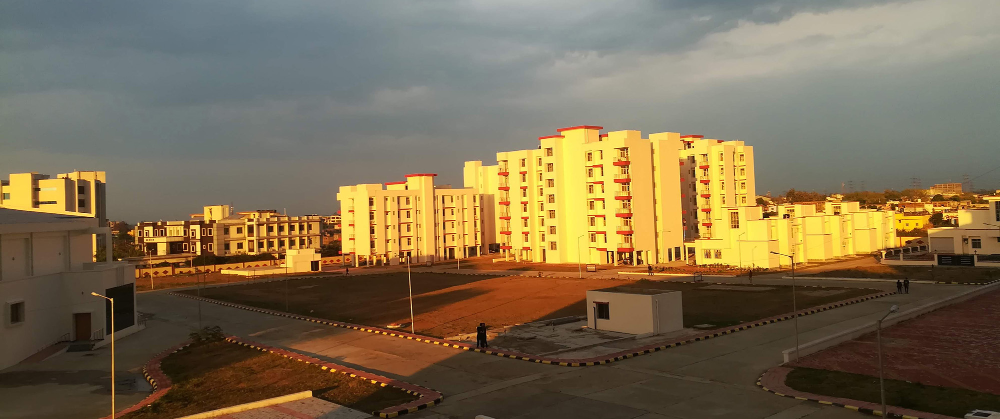
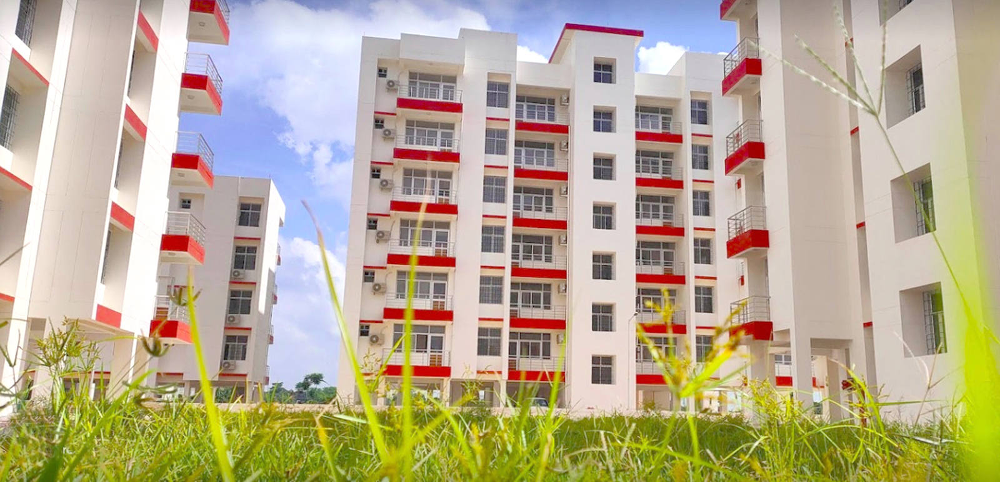

( An Institute Of National Importance Under Moe,Govt. of india )




Environment Of College
Environment is Full of Freshers Positive Energy . Students have come from all parts of the country.
INDIAN INSTITUTE OF INFORMATION TECHNOLOGY provides ample oppurtinity to students to explore themselves .
It provides students with every tool necessary for their development . Every student studying in this institute
has vast variety of talents . Every Student Teach Us About There Locality And Culture In Different Way.
Faculties Are Very Helpful And Explain Each Every Subject With A Practical Knowledge And They Know
Very Very Well About a Students Feelings, So They Though Us Accordingly.
Places We Visited!

Me And My Friends Visited At Tagore Hills And Rock Gardens. Where We Enjoy A Lots And Collects Some Memories
For Future . So Firstly We Are Very Excited ,As We Hear About a Tagore Hill And Rock Garden.Then Me and My 10 Friends Nishant,Amit,Sankalp,Karmayoji,
Rohit,Mohit,Anuj,Mayank,Rishik,Sachin Were Enjoy A Lot And Click Some Pics. And Then After We All Are
Went To Domino's For Pizza Party And Take 10 pizza Each For One and Share It With Each Others . And The 2nd Trip
To Jagannath Temple As ,The 100 feet tall temple was built by Thakur Aninath Shahdeo, in 1691 AD. The temple's architectural style is reminiscent of its counterpart at Puri. It draws lakhs of devotees every year, especially on the occasion of car festival or Rath Yatra, in the month of June/July.
So Our Group Went There And Take a Blessings Of Lord Jagannath.
Sports

The institute has many sports facilities . It has a cricket ground in which students gather in the evening and enjoy the game of cricket . Apart from the cricket ground the institute also has badminton courts and a football ground. We can see some very talented players also in the ground who have represented their schools or college at district or even state level . All in all the institute is filled with a lot of positive energy in the evening from the sports activities.
Also there is a activity centre in the institute where the students can enjoy indoor sports as well . Table tennis , carrom , chess are some of the sports that the students enjoy in the institute .
Also the students of the institute take part in various inter iiit sports competitions and also many of the students in the past have made the institute proud by winning these inter iiit competitions .
There is e sports facilities also available in the institute in which the students enjoy eSports . The institute has every type of sports facilities for the student's enjoymment.
Climate
As far as we have experienced Ranchi has a pleasant climate compared to the northern or southern cities of India . The temperature in summers in some parts of India rises above 45 ° C whereas the temperature of ranchi reaches maximum of 35°C . One can expirience cool breezes of wind blowing in the evening and early morning . Also if the temperature is above 35 ° C for more than 2-3 days then rainfall surely occurs making the climate cooler and pleasant .
As compared to other cities of India , Ranchi has very less humidity . One can often experience pleasant cool gusts of winds blowing in the evenings of summer .
What we have experienced so far is that Ranchi has a very pleasant and comforting climate,We haven't experienced the winter weather of Ranchi but heard that the winter season in ranchi is extreme and also at some parts temperature even comes down to 0 °C pretty much like northern parts of India .
 


